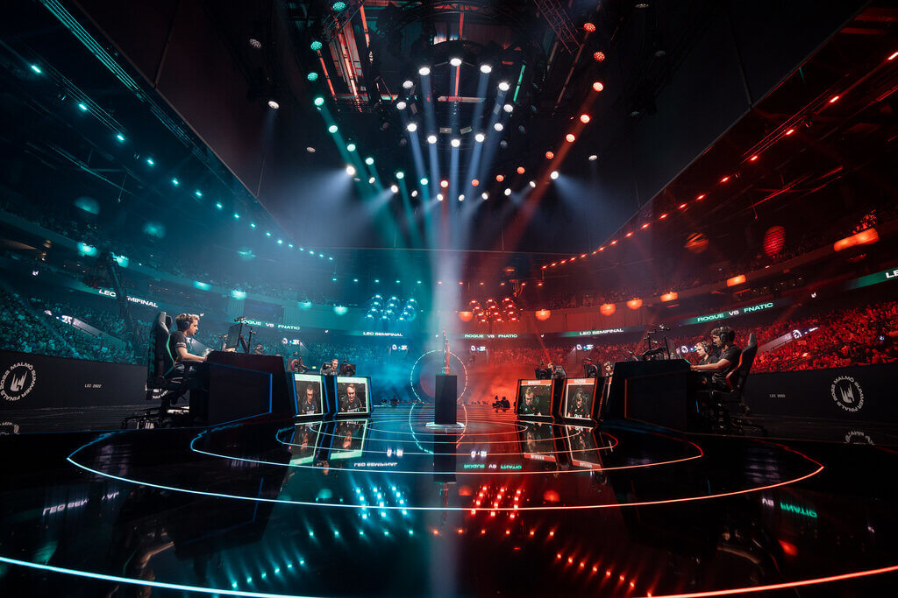
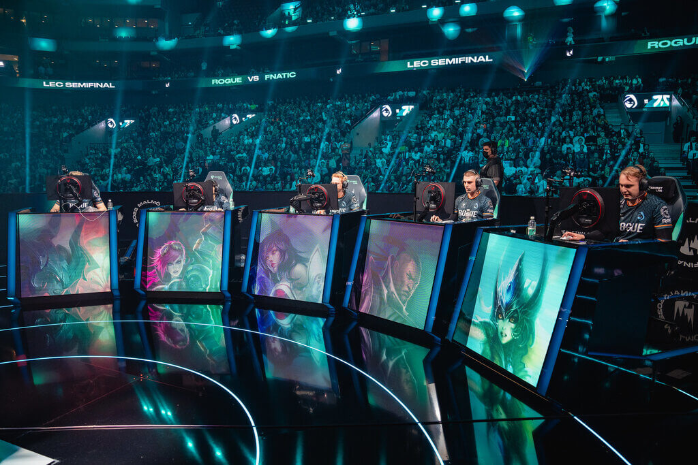
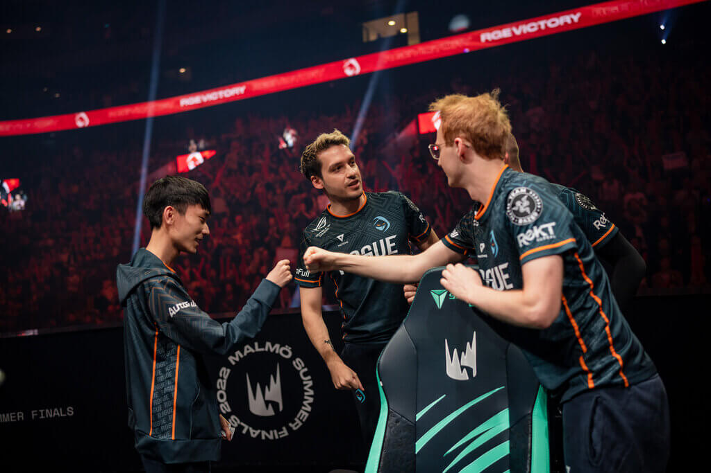

League of Legends
League of Legends also known as “LoL” is a popular online multiplayer battle arena game that was developed by Riot
Games. Its first release was in the year 2009 and since then it has gained a large and dedicated player base around the
world.
The game consists of two teams, each made up of five players. Players on each team choose from a variety of characters,
called champions, with different abilities and roles in the game. The main objective is to destroy the opposing team's
base (Nexus) while at the same time defending your own.
In League of Legends, team communication, strategy, individual skills, response times and distractions are important to
achieve victory. Its sensation, influence and existence has come to cause a great significant impact as an electronic
sport (eSport). Which has helped esports gain popularity around the world and attract millions of viewers.
5 Reasons to watch or play LoL
I would like to share and mention some reasons that might invite you to join us and play League of Legends since I
consider it a fascinating and entertaining game that can give you many hours of fun and excitement.
1) Variety of Champions
League of Legends offers a large selection of different characters, known as "Champions." The range of champions to
choose from exceeds 140. Each champion has unique abilities and play styles, so you are sure to find one that suits your
personal play style. Whether you prefer to act as a melee fighter, prefer magic spells or attack your opponents from a
distance, there is something suitable for everyone.
2) Tactical Gameplay
League of Legends is a strategic team game where collaboration and communication are crucial. You will have to learn to
work together with your team members to destroy the enemy base and achieve victory. The game requires tactical thinking,
quick decision making and the ability to adapt to different situations. Not only will your individual mechanical ability
bring you victory, but also maintaining a good tactical game.

3) Competitive atmosphere
If you are the type of person who likes to compete against other players, League of Legends offers a highly competitive
environment. You can test your skills in ranked games and compete with other players. There are also regular
professional level tournaments where the best players in the world compete against each other. You will be able to enjoy
a great atmosphere and a great atmosphere that will lead you to give your best to win.
4) Regular updates and new content
The game is constantly developed and updated with new content. New champions, game modes and maps are added regularly to
keep the gaming experience fresh and exciting. There is always something new to discover and learn. The gameplay will
require perseverance and adaptations to new styles and situations that will give you new fun.
5) Community and social interaction
League of Legends has a large and vibrant community of players with whom you can compete and socialize. Within the game
you will have the option to chat with your team and the enemy team. Since it is an online platform, the game will link
you with people from the region you have selected.
